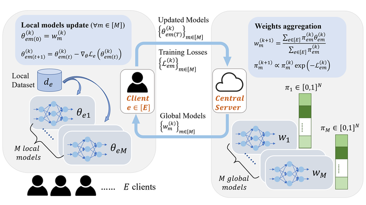

Federated learning (FL) provides an effective collaborative training paradigm, allowing local agents to train a global model jointly without sharing their local data to protect privacy. However, due to the heterogeneous nature of local data, it is challenging to optimize or even define the fairness of the trained global model for the agents. For instance, existing work usually considers accuracy equity as fairness for different agents in FL, which is limited, especially under the heterogeneous setting, since it is intuitively “unfair” to enforce agents with high-quality data to achieve similar accuracy to those who contribute low-quality data. In this work, we aim to address such limitations and propose a formal fairness definition in FL, fairness via agent-awareness (FAA), which takes different contributions of heterogeneous agents into account. Under FAA, the performance of agents with high-quality data will not be sacrificed just due to the existence of large amounts of agents with low-quality data. In addition, we propose a fair FL training algorithm based on agent clustering (FOCUS) to achieve fairness in FL measured by FAA. Theoretically, we prove the convergence and optimality of FOCUS under mild conditions for linear and general convex loss functions with bounded smoothness. We also prove that FOCUS always achieves higher fairness in terms of FAA compared with standard FedAvg under both linear and general convex loss functions. Empirically, we evaluate FOCUS on four datasets, including synthetic data, images, and texts under different settings, and we show that FOCUS achieves significantly higher fairness in terms of FAA while maintaining similar or even higher prediction accuracy compared with FedAvg and other existing fair FL algorithms.

An overview of our FOCUS algorithm